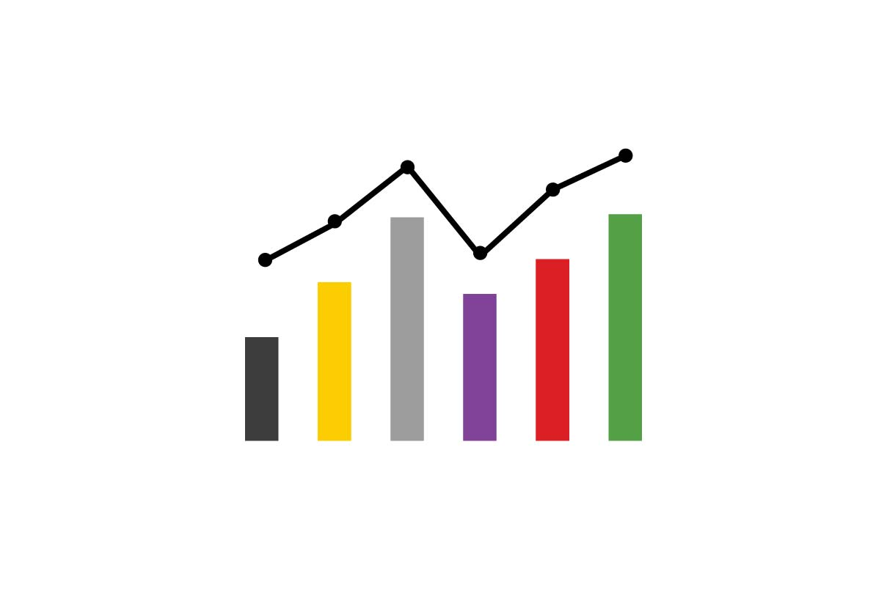
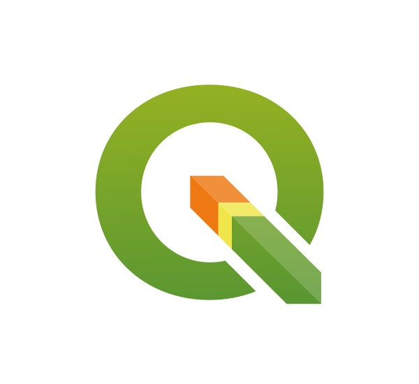
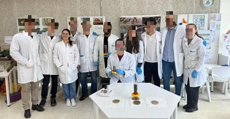
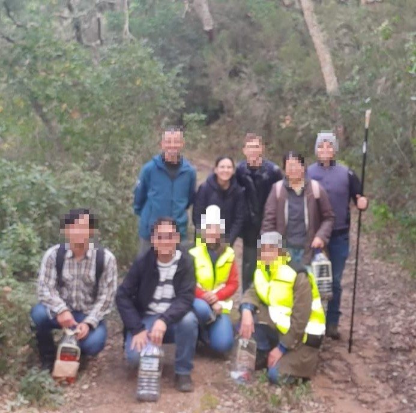
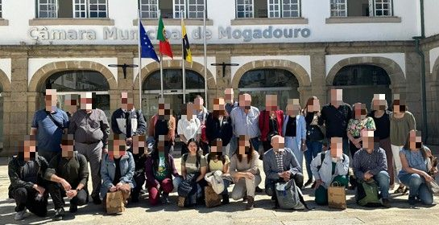
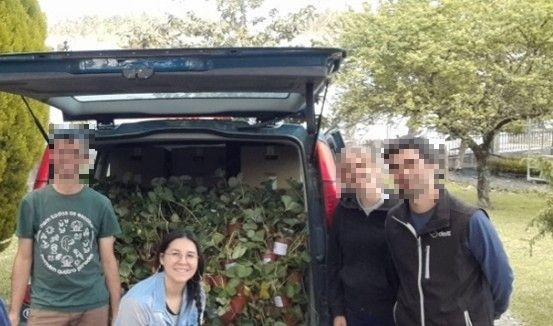
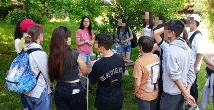
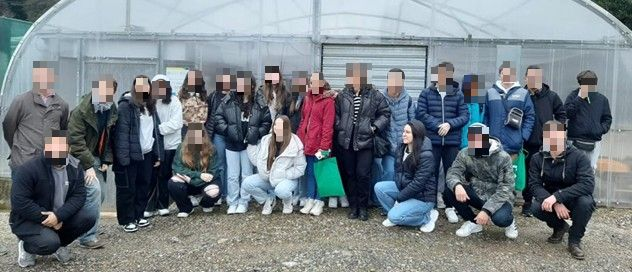

Data & Analytics
PythonSQLPower
BITableauMicrosoft OfficeStatistics AnalysisData
ModelingData Visualization
Environmental Engineer · Data Analyst
I turn complex environmental data into clear decisions — from greenhouse experiments to dashboards, maps and community workshops.
About me
Grounded in academic research, I gained extensive experience analyzing large and complex datasets. My background in environmental engineering equipped me to handle a wide range of variables and identify actionable insights.
These skills make me proficient in transforming challenging data into clear results for decision-making — whether it's a water balance, a map of a rural area or a dashboard that updates itself.
More about meGood decisions grow from good data.
Toolbox
Work
Some of my most recent work, from cleaning raw data to final maps and reports.

Complete data cleaning and analysis projects using Excel, SQL, Power BI, Python and PowerPoint.

Projects using QGIS, custom map production, and step-by-step PDFs documenting the tools and methods applied.
Technical reports, project documentation and scientific publications — papers, articles and posters.
From the field to the dashboard — and back to the community.
Impact
Fieldwork, greenhouse experiments and environmental education — technical expertise with a commitment to sustainable development.






Contact
Feel free to reach out for collaborations, questions or opportunities.
Send an email